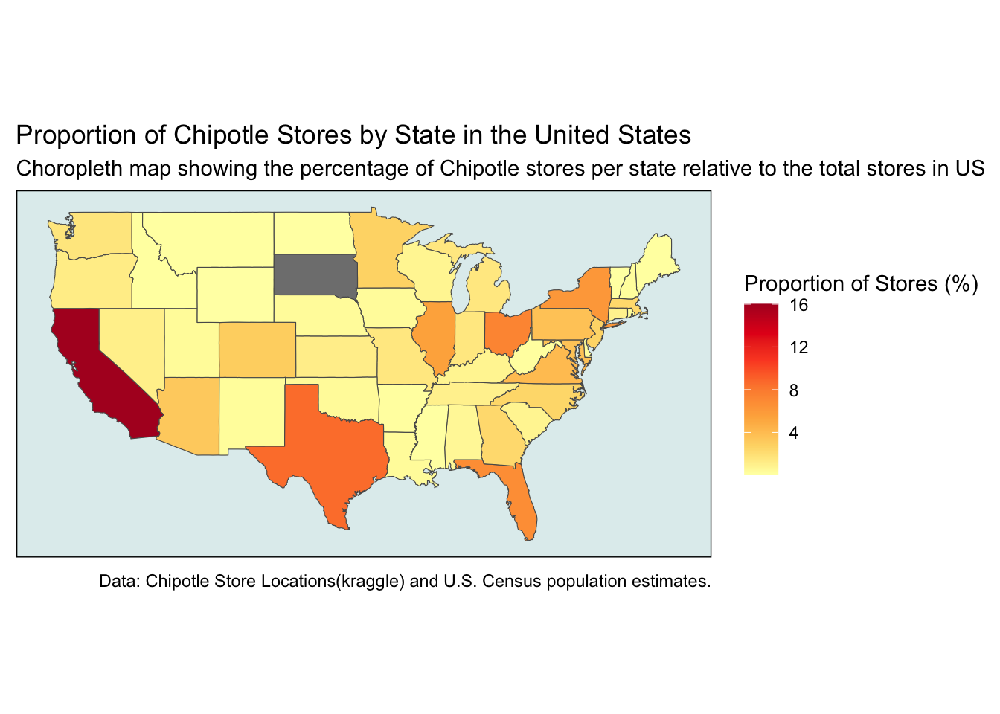

Mapping Chipotlle Stores
SDS192
Question: How does the distribution of Chipotle stores across the United States align with state populations? Additionally, when analyzing the proportion of stores relative to the total number of Chipotle locations and adjusting for population size, what insights can we uncover about factors influencing store placement, such as population density, urbanization, or regional economic activity
This map displays the distribution of Chipotle stores across the United States
In this section, we aim to visualize the proportion of Chipotle stores in each state across the United States. To achieve this, we first create a population map to provide context and to ensure we don’t create the population map again.
We first create the population map of the United States.
Next, we create a map displaying the proportion of Chipotle stores in each state relative to the total number of stores across the United States.
creating the chloropleth map

From the plot created, it is evident that the map closely resembles a population map, as it shows a similar distribution pattern across the states.
To create a map that accounts for population differences, we calculate the number of Chipotle stores per million residents in each state.
Blog post
In this project, we explored the distribution of Chipotle restaurants across the United States using geospatial analysis. Leveraging a dataset from Kaggle, which provides the location of every Chipotle restaurant in the country, we sought to understand the company’s location strategy. The dataset was uploaded by Jeffrey Braun, a UChicago graduate, who claimed to have scraped the data from the Chipotle website. (Braun 2020). Specifically, we aimed to analyze how Chipotle store locations are distributed in relation to state populations and to investigate whether store concentration correlates with population density.
We began by visualizing the locations of Chipotle restaurants on a U.S. map. This involved converting the dataset into a spatial format, enabling us to plot the coordinates of each store. The visualization revealed that Chipotle locations are primarily concentrated in urban centers, with states like California, New York, and Texas hosting the most stores. These states, with their high population densities and large urban hubs like Los Angeles, New York City, and Houston, naturally align with a higher number of Chipotle locations. To assess how population influences store distribution, we created a population map of the United States. This step was crucial as it provided a baseline for comparing the distribution of Chipotle locations to population data. From there, we developed a custom function to calculate each state’s proportion of Chipotle stores relative to the national total. Using this data, we created a choropleth map that graphically represented the store proportions, offering a clear depiction of states with higher or lower concentrations of Chipotle locations. The resulting map closely mirrored the population map, suggesting that states with larger populations generally host more Chipotle stores. However, we wanted to investigate further to determine if less-populated states had a comparable number of stores per million residents to more populous states.
We then took our analysis a step further by considering population-adjusted metrics. Recognizing that absolute store counts alone do not account for state population differences, we integrated U.S. Census data to calculate the number of Chipotle stores per million residents in each state. This approach allowed us to explore whether smaller states with lower populations had comparable store density to larger, more populous states. Using this new proportion, we created another choropleth map to visualize the distribution of Chipotle stores on a per-capita basis, offering a more balanced view of store density relative to population size. The population-adjusted analysis highlights interesting patterns. States with, such as Minnesota, Ohio, and Pennsylvania, have a proportionally higher number of Chipotle stores per capita, even if their total store counts are relatively modest. On the other hand, some highly populated states have a relatively lower store density per capita, despite hosting a large number of locations overall. This suggests that Chipotle’s placement strategy is not solely driven by population size but also considers other factors such as high-traffic urban centers, economic activity, and potentially regional preferences.
Our findings align with insights from Jordan Bean’s study, which highlights Chipotle’s strategic focus on urban centers in high-density areas while also noting a recent shift toward suburban areas (Bean 2023). This strategic adaptation may reflect evolving trends, such as population migration and hybrid work patterns, as Chipotle seeks to expand its reach into new markets.
In conclusion, this project highlights the value of integrating geospatial and demographic analysis to understand business strategies. By creating maps that account for both absolute store counts and population-adjusted metrics, we uncovered patterns that reveal the brand’s strategic focus on urban areas and densely populated states. These findings can help inform business decisions of Chipotle and other brands, from identifying growth opportunities to refining location strategies. Lastly, this project highlights how geospatial tools and demographic data in R can be applied to real-world problems, offering practical insights for optimizing retail operations and enhancing strategic planning.
References
Bean, Jordan. 2023. “Beyond the Burrito: The Analytics Behind Chipotle’s Location Strategy.” Medium, May. https://jordanbean.medium.com/the-analytics-behind-chipotles-location-strategy-2d91a23fd66.
Braun, Jeffrey. 2020. “Chipotle Locations: A CSV File for All Chipotle Locations in the US.” https://www.kaggle.com/jeffreybraun/chipotle-locations.